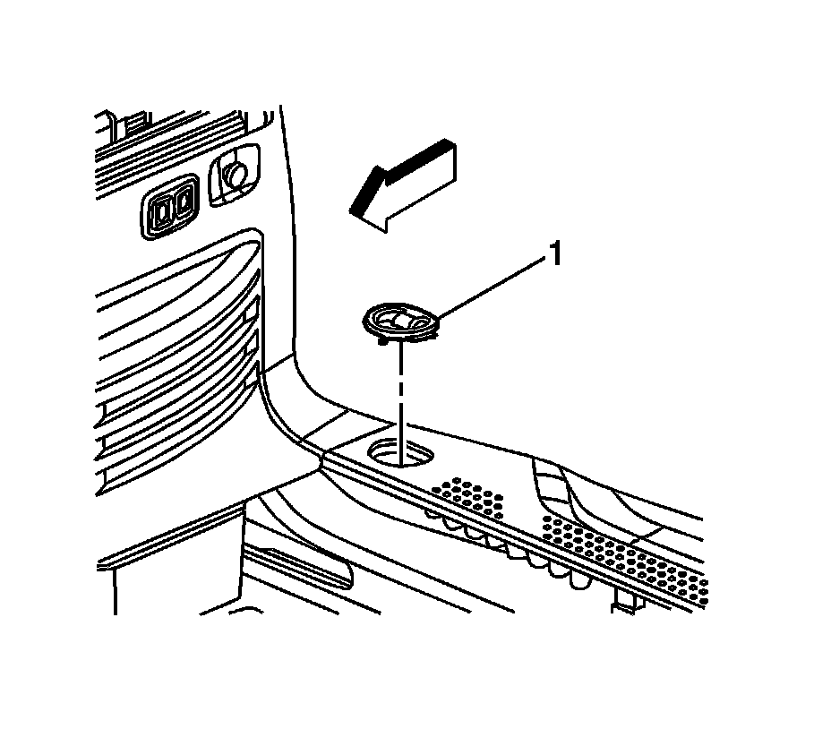
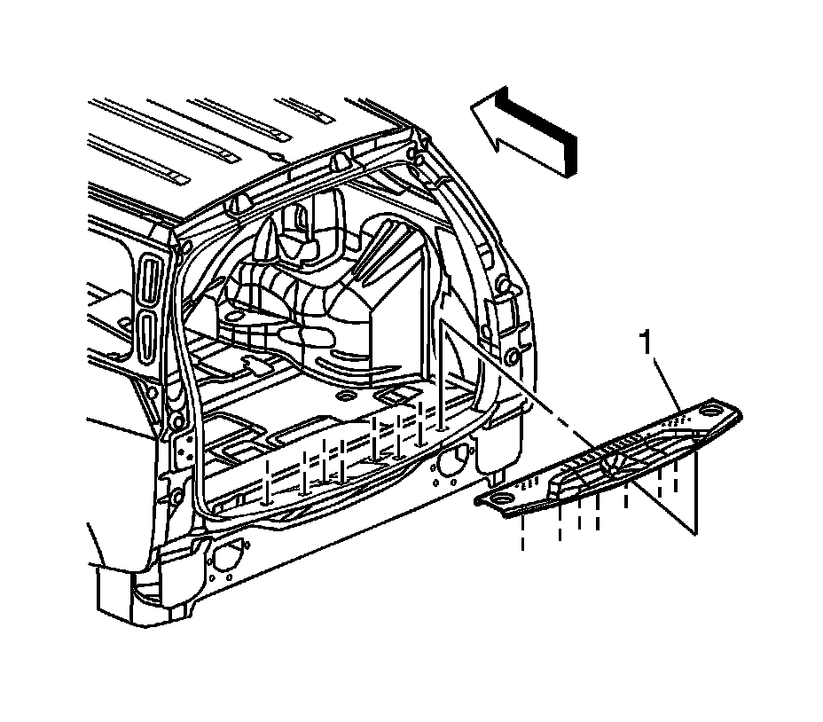

Rear Compartment Sill Trim Plate Replacement
Rear Compartment Sill Trim Plate Replacement
Removal Procedure

1. Remove the cargo tie down bezel (1) from the sill plate.

2. Lift up on the sill trim panel (1) to disengage the retainers.
3. Remove the sill plate from the door frame.
Installation Procedure
1. Ensure that all retaining tabs are securely attached to the sill plate (1).
2. Align the retaining tabs to the liftgate door frame slots.
3. Push down on the sill plate, seating the retaining tabs to the door frame.
4. Install the cargo tie down bezel (1) over the tie down loop.